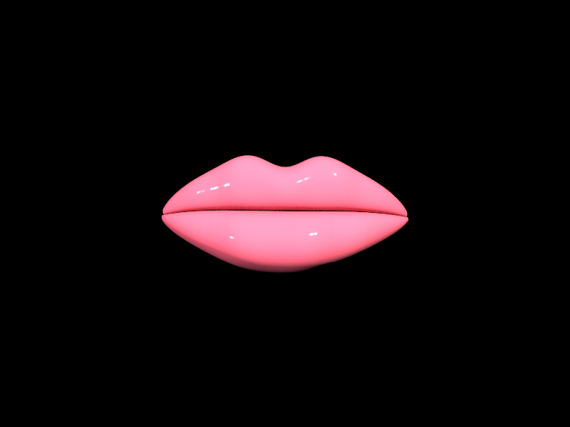
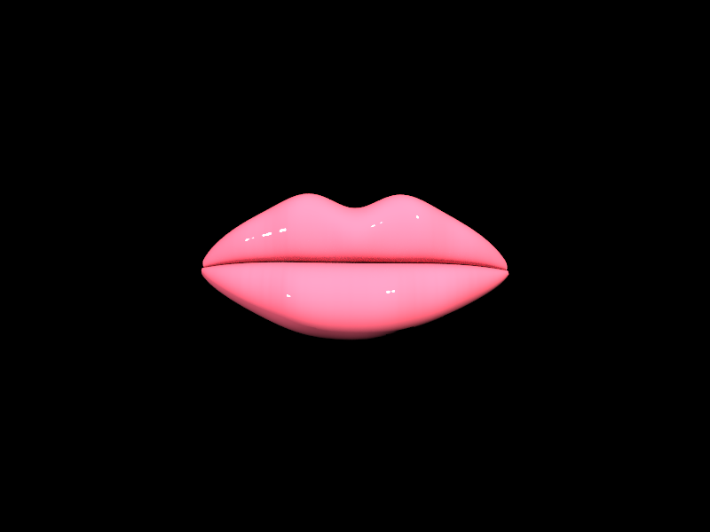
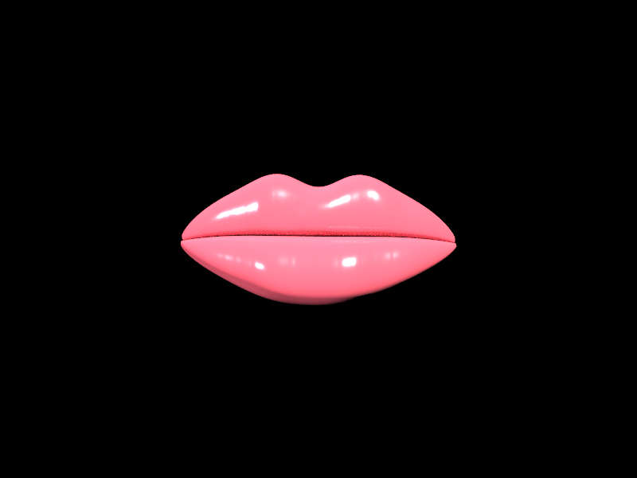
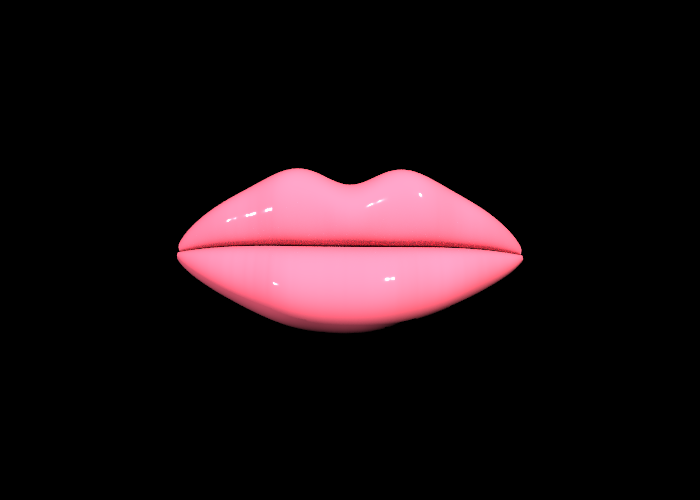
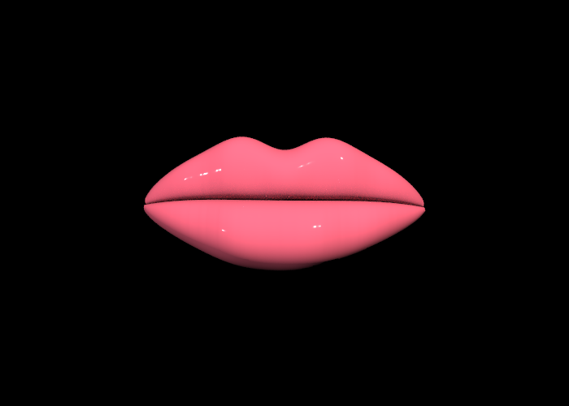
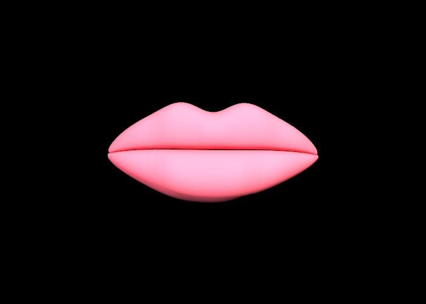

Lip Service: Pathtracing Viscous Dielectrics
Names: Andrea Dao, Jade Wang, Tunmise Akanle, David Smith
Link to webpage:
https://cal-cs184-student.github.io/hw-webpages-Draosy/final-project/milestone.html
Link to GitHub repository:
https://github.com/jadewang26/184-final-proj-lipgloss
Link to video:
https://drive.google.com/file/d/11dR3UGaUU76iCByFEFnpqht5db7Xpc4O/view?usp=sharing
Abstract
Rendering human features requires accurately modeling complex light interactions across multiple biological and sometimes applied layers. This is especially true when trying to render human lips with lip gloss applied on top, as we must accurately simulate how light is reflected and absorbed by not only the glossy top layer, but also its underlying skin. Our project extends the C++ path tracer in Homework 3 to simulate lip gloss by implementing a custom Layered BSDF that blends an approximate BSSRDF to capture the subsurface scattering and coloration of human tissue with a BSDF that simulates the glossy coating. We experimented with various different BSDFs to see which one would simulate our glossy coating the best. We also added parameters to the gloss layer such as Roughness (dictating the shine of the dielectric layer), Thickness (acting as the layer's opacity), Base Color, a Saturation multiplier, and the Index of Refraction (IOR).
Technical Approach
Base Layer (BSSRDF)
The base layer of the lip model, or the fleshy skin-like layer, was modeled using an Approximate BSSRDF, or Bidirectional Scattering Surface Reflectance Distribution Function. We thought simulating the internal light transport would be too computationally expensive and not worth it since this would be going under a much more important top layer, so we approximated the subsurface scattering effect by using a cosine factor.
Gloss Layer (Cook-Torrance BSDF)
For our first iteration of our Layered BSDF, we used the Cook-Torrance Microfacet BSDF for our gloss layer. This basically treats the gloss layer as a bunch of microscopic mirrors or microfacets, which works because we want an extremely glossy surface. The specular reflectance of this layer is given by the formula:
We calculated
h as the normalized half-vector and passed it into each part of the Cook-Torrance BSDF. The first part is
D or the Normal Distribution Function, which contributes to the size, shape, and sharpness of the glossy highlights and is connected to our
roughness parameter. We chose to use GGX Distribution (between Beckmann, Phong, and GGX, the paper seemed to recommend the latter) since it has stronger tails and better shadowing. For
F, or Fresnel Reflectance, which uses the
ior or index of refraction parameter, and is in control of the reflection on the edges of the lips, we used Schlick's approximation to interpolate the
ior at grazing angles. Finally,
G or Geometry Shadowing, which darkens the edges of the lips to prevent unnatural glowing, used the the separable product of the shadowing and masking components
G1 for both
wi and
wo.
Experimenting with Other BSDFs
Since Cook-Torrance BSDF is expensive, we tested other BSDFs as well. Normalized Blinn-Phong BSDF using the Kelemen geometry approximation was much better in terms of speed since it doesn’t include expensive square roots and complex trigonometric divisions. It simplifies the geometry term G and the denominator of the standard microfacet model into a single, highly efficient calculation. Also, unlike the old-school OpenGL Blinn-Phong model, this normalized version is physically based and conserves energy, meaning it fits perfectly into a path tracer. However, after trying this we found it was worse in terms of gloss and granier.
Another BSDF we tried was the Disney Principled Subsurface Approximation to get a more fleshy and translucent lip look combined with a wet clearcoat. We modified the ss_factor equation so that putting a light behind the lips will have the edges appear to softly glow rather than reducing to dark shadows. By multiplying the flesh contribution by 1-f, the specular highlights stand out much sharper against the diffuse color, making it look more realistically wet.
Procedural Lip Geometry
Instead of relying on a texture or a downloaded mesh, we generate the lip model in
src/pathtracer/generate_lip.cpp. The mesh is made from three parametric patches: an upper lip, a lower lip, and a narrow recessed mouth crease. Each patch is tessellated into triangles and exported into
dae/final-project/lips1.dae with per-vertex normals. The upper lip function shapes the Cupid's bow, side tapering, central swell, and border recession. The lower lip function adds a larger central pillow and softer lower border. The mouth crease sits slightly behind both lips, which makes the line between the upper and lower lip read as depth instead of a bent surface.
This part of the project used ideas from the CS184 mesh lecture,
08-meshes.pptx. Our representation is not a general subdivision surface; it is a direct procedural triangle mesh. That was a deliberate subset of the mesh techniques covered in class because the lip shape needed to be easy to tune. Parameters such as the Cupid's bow dip, vertical folds, central lower-lip bulge, corner recession, and crease depth gave us artistic control while still producing ordinary indexed triangle geometry that the existing BVH and path tracer could render.
Results
Here is a side-by-side comparison of the different BSDFs we tested for our gloss layer:
|

Cook-Torrance BSDF
|

Blinn-Phong BSDF
|

Disney BSDF
|
Here is a side-by-side comparison of the Cook-Torrance BSDF at different roughness and thickness levels:
|

Default Parameters: balanced flesh color and controlled roughness and gloss thickness.
|

High Gloss Parameters: lower roughness and higher gloss thickness for a wet finish
|

Matte Parameters: higher roughness and lower gloss thickness for a dry finish
|
References
CS184 lecture slides: 08-meshes.pptx, 9-11-ray-tracing+acceleration.pptx, 12- integration.pdf, 13-global-illumination-path-tracing.pdf, 14-material.pdf, and 15- Color-and-Perception.pdf.
Brent Burley, "Physically-Based Shading at Disney," 2012.
https://disneyanimation.com/publications/physically-based-shading-at-disney/
Bruce Walter et al. “Microfacet Models for Refraction through Rough Surfaces.” EGSR 2007,
doi:10.2312/EGWR/EGSR07/195-206
Henrik Wann Jensen et al., "A Practical Model for Subsurface Light Transport," 2001.
doi:10.1145/383259.383319
Robert L. Cook and Kenneth E. Torrance, "A Reflectance Model for Computer Graphics," 1982.
doi:10.1145/357290.357293